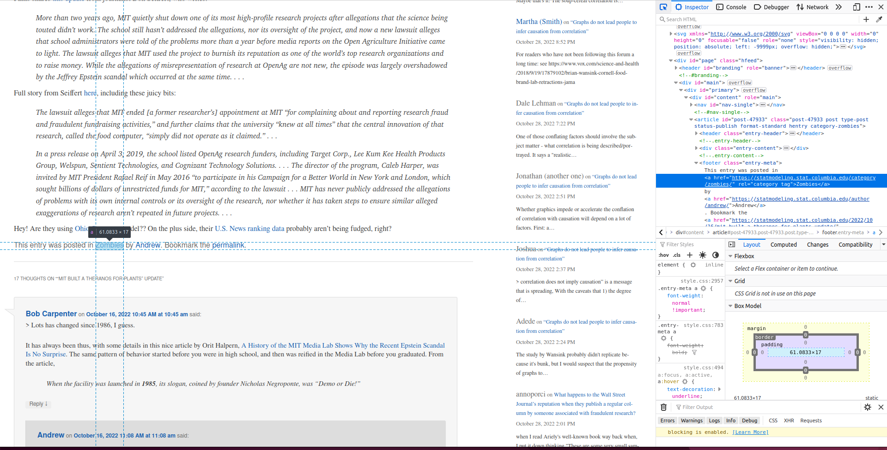

Javascript allows dynamic elements on the page. It also makes scraping the website difficult since it is not available in the code directly. If we download a copy of the website, we cannot access these elements.
We are going to use RSelenium that allows the bot to behave like a human and click on elements.
library(RSelenium)library(scrapex)library(xml2)
Warning: package 'xml2' was built under R version 4.5.2
library(magrittr)library(lubridate)
Attaching package: 'lubridate'
The following objects are masked from 'package:base':
date, intersect, setdiff, union
library(dplyr)
Attaching package: 'dplyr'
The following objects are masked from 'package:stats':
filter, lag
The following objects are masked from 'package:base':
intersect, setdiff, setequal, union
library(tidyr)
Attaching package: 'tidyr'
The following object is masked from 'package:magrittr':
extract
Using Selenium to Open a Browser
Selenium opens a browser and clicks on parts of the pages as if it was human. After this, use xml2 to extract the data needed.
blog_link <-gelman_blog_ex()
Save the blog link.
remDr <-rsDriver(browser ="firefox", phantomver =NULL, port =3434L)
The most effective way to navigate in RSelenium is to use XPath to find parts of the website that you want perform an action and then use some of the methods to click, send or submit something on the website.
read_html() downloads the HTML source code. xml_find_all finds all a links within h1 tags with the class “entry-title”. This saves the link, but does not click on it. We need to use Selenium to click on it.
# Since we'll use the client a lot let's save it on a separate objectdriver <- remDr$clientdriver$findElement(value ="(//h1[@class='entry-title']//a)[1]")$clickElement()
This code clicks on the element selected. findElement() finds the element and clickElement() clicks it.
Extract the HTML Code
To extract the HTML code and extract information we need to use getPageSource() and extract the appropriate slot.
page_source <- driver$getPageSource()[[1]]
page_source is a string that contains all the HTML source code of the website. We can then use read_html() to read it.
html_code <- page_source |>read_html()
Finding Specific Information
Let’s assume we want to find all categories that are associated with this post. The categories are in the bottom of the post:

The categories are in an a tag that has a href = “category”.
Note of the use of parse_date_time and the time format (all the % symbols) to convert the string of date/time into R. With that information we can create a clean data frame of entry dates with their respective categories in a list column:
With this code, let’s say we want to loop it over each blog post. We need Selenium to go back to the main page of the blog between extractions. Use goBack() to do this.
driver$goBack()
Now let’s make the loop:
collect_categories <-function(page_source) {# Read source code of blog post html_code <- page_source |>read_html()# Extract categories categories_first_post <- html_code |>xml_find_all("//footer[@class='entry-meta']//a[contains(@href, 'category')]") |>xml_text()# Extract entry date entry_date <- html_code |>xml_find_all("//time[@class='entry-date']") |>xml_text() |>parse_date_time("%B %d, %Y %I:%M %p")# Collect everything in a data frame final_res <-tibble(entry_date = entry_date, categories =list(categories_first_post)) final_res}# Get all number of blog posts on this pagenum_blogs <- blog_link |>read_html() |>xml_find_all("//h1[@class='entry-title']//a") |>length()blog_posts <-list()# Loop over each post, extract the categories and go back to the main pagefor (i inseq_len(num_blogs)) {print(i)# Go to the next blog post xpath <-paste0("(//h1[@class='entry-title']//a)[", i, "]")Sys.sleep(2) driver$findElement(value = xpath)$clickElement()# Get the source code page_source <- driver$getPageSource()[[1]]# Grab all categories blog_posts[[i]] <-collect_categories(page_source)# Go back to the main page before next iteration driver$goBack()}
While your code runs, open the browser and enjoy the show. Your browser will start working it self as if a ghost were scrolling down and clicking on each blog post. When it finishes, we’ll have a list of all categories in the last 20 blog posts. Let’s combine those and get a count of the most used categories: